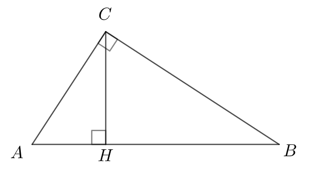

Nel triangolo rettangolo \(ABC\) l'altezza relativa
all'ipotenusa, \(CH\), misura \(6\) unità e l'angolo \(\widehat{HCB}\) è
ampio \(63°\). Risolvere il triangolo \(ABC\).

Semplificare la seguente espressione goniometrica
\[
sin\left(\dfrac{3}{2}\pi + \alpha\right) \cdot cos(\pi + \alpha) - sin(\pi - \alpha) \cdot cos\left(\dfrac{\pi}{2} + \alpha\right)
\]